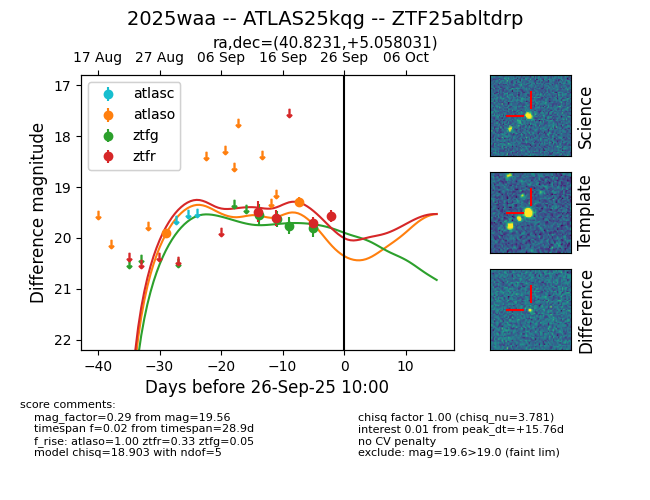
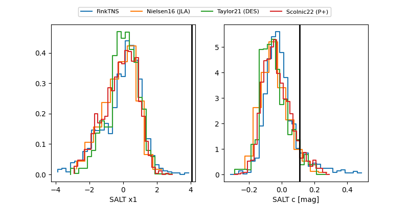

FINK: ZTF25abltdrp
Lasair: ZTF25abltdrp
ALeRCE: ZTF25abltdrp
TNS: 2025waa
YSE: 2025waa
ZTF25abltdrp (ztf,fink)
2025waa (tns,yse)
ATLAS25kqg (atlas)
equatorial (ra, dec) = (40.8231,+5.05803)
galactic (l, b) = (167.1720,-47.97175)


last atlaso=19.29, ztfg=19.81, ztfr=19.56
2 atlaso, 4 ztfg, 4 ztfr detections